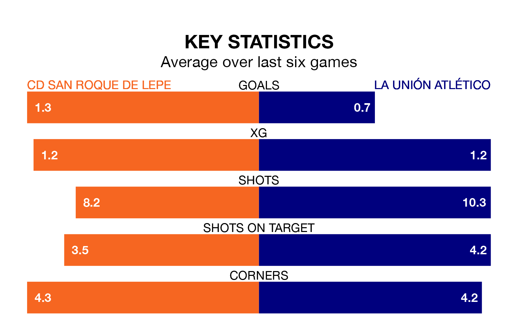

Sunday's early match at the Estadio Municipal Ciudad de Lepe sees two relegation candidates play each other, as 17th-ranked CD San Roque de Lepe host 15th-placed La Unión Atlético.
San Roque de Lepe have picked up 17 points from their first 17 Segunda División RFEF Group 4 games, with four wins and five draws.
That is two points less than la Unión Atlético have collected, having won six and drawn one.
San Roque de Lepe are in disappointing form in Segunda División RFEF Group 4, with two wins and four losses from their last six games.
With a win and a draw over that period, La Unión Atlético's form is slightly worse – they have taken four points from 18, compared to the home team's six.
With 18 goals in 19 games so far this season, San Roque de Lepe are scoring at below the league average rate with 0.9 goals per game. And they are conceding more than average, letting in 20 goals at a rate of 1.1 per game.
La Unión Atlético, meanwhile, are average scorers, with 1.0 goal per game. They have conceded 1.3 goals per game.
San Roque de Lepe's last match was on Sunday, a 1-0 loss against Antoniano.
La Unión Atlético drew 0-0 with Racing Cartagena MM last time out, also on January 21.
Updated: 09:18 (UTC), 23/01/24